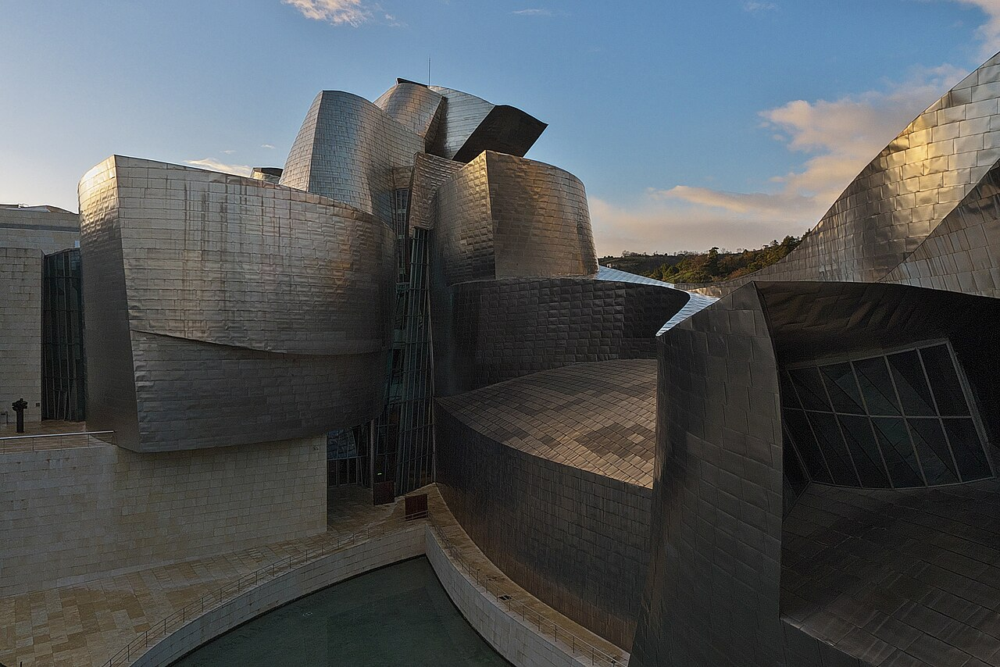

Bilbao · 5-day family itinerary
One Bilbao base, the Guggenheim on a day when it is open, and the Bizkaia Bridge walkway while October still uses the summer timetable.

Photo: José Luis Filpo Cabana, Guggenheim Bilbao. Exterior, CC BY 3.0, via Wikimedia Commons.

Checked before you commit
This illustrative route keeps four nights in one Bilbao base and uses the airport bus, one funicular, the riverside museum, the old town on foot, and Metro to the estuary for the Bizkaia Bridge. The order of Days 2 to 4 follows museum closed days and the bridge’s October summer hours. Hours and prices below come from pages opened on 9 October 2026. Nothing was booked.
One hotel in Bilbao. No second city and no same-day San Sebastián hop. The Guggenheim sits on a Tuesday–Sunday open day; the bridge walkway sits inside the Easter-to-October summer window.
One paid anchor a day, with a soft old-town day in the middle and the hotel by late afternoon. Under-18 Guggenheim and Itsasmuseum admission is free, but both still start at a ticket desk or official ticket path.
Museum days, bridge seasons, funicular hours and airport-bus times were not checked for your dates. A booking-hub link is intent only. It does not buy a museum ticket, a walkway ticket or a Barik top-up.
Planning boundary: dates are illustrative. The worked example runs Wednesday 14 to Sunday 18 October 2026. Hours and “from” prices come from pages opened on 9 October 2026. Alfred does not read a museum closed-day list or a bridge season while it writes the day. Book opens a partner checkout. It does not prove that a ticket exists. Bilbao is not one of the destination guides in the signed-in app.
Route and family-coordination brief
Party: two adults and school-age children. Base: four nights in Bilbao, preferably within an easy walk or short Metro/tram of Abandoibarra or Casco Viejo. Pace: moderate, one anchor a day. Budget input: Mid Range. The only prices stated here are the ones a page actually printed.
Getting there: Aena lists Bizkaibus line A3247 between Bilbao and the airport. Airport to Bilbao runs from 06:10 to 23:40 every 15 minutes. Bilbao to the airport runs from 05:00 to 22:00 every 15 minutes. Stops include Gran Vía 79, Plaza Moyúa and Alameda Recalde 11. Fares sit on Bizkaibus, not on the Aena page.
Getting around: walk the riverside and Casco Viejo; use Metro for the estuary towns. Getxo’s tourism page names Metro Areeta for the Bizkaia Bridge. Exact Metro journey times weren’t checked, so leave slack and check the live Metro board.
The calendar order: the Guggenheim’s page shows Tuesday–Sunday opening in the ordinary season, with named Monday exceptions (including 12 October 2026). Itsasmuseum is closed on Mondays as a general rule. The bridge operator’s Spanish hours page shows a summer walkway window of 10:00–20:00 from Easter to October, then a winter split day from November. So the museum day comes before the soft day, and the walkway sits while October still counts as summer.
Day 1 — Arrive on A3247, then the Artxanda funicular
Fly into Bilbao Airport (BIO). Take Bizkaibus A3247 into the city. Aena says airport departures toward Bilbao run every 15 minutes from 06:10 to 23:40, with city stops at Gran Vía 79, Plaza Moyúa and Alameda Recalde 11. Leave bags at a hotel near Abandoibarra or Casco Viejo. If the hotel cannot take bags before check-in, ask it, not the bus timetable.
Afternoon: the Artxanda funicular. Its own page lists winter hours from 1 October to 31 May as 07:15–22:00 Monday to Saturday and 08:15–22:00 on Sundays and public holidays. Trips run every 10 minutes from 11:00 to 20:00 and every 15 minutes at other times, and the ride lasts 3 minutes. Online shopping shows fares of €3.50 and €6.00 including VAT; the operator’s page did not label which figure is a single and which is a return, so confirm the fare board at the station before you promise a price to a child.
Fallback: if the flight or bus runs late, skip Artxanda today. It runs into the evening under the winter timetable, so it can move to the end of Day 3 or a short slot on Day 5. Do not start a museum day on arrival day.
Day 2 — Guggenheim Museum Bilbao on an open day
Walk or take a short local hop to the Guggenheim. The museum’s hours page shows Tuesday through Sunday from 10:00 to 19:00 in the ordinary season, with later closing in Easter week and summer. October sits in the ordinary 19:00 close. Admission desks close 30 minutes before closing time, and visitors are asked to clear the galleries 15 minutes before closing.
Tickets: adults €18; students aged 18–25 and seniors over 65 €9; children and youths under 18 free. All tickets include an audio guide. The museum asks visitors to buy on its official website and says no refunds are given for tickets already issued. Children under 12 must be accompanied by an adult. Allow a full morning inside, then use the riverside outside the building for a short reset rather than stacking a second paid museum the same afternoon.
Fallback: if energy fails after ninety minutes, keep the outdoor sculpture and riverside walk and move on. If your dates force a Monday, check the museum’s listed Monday openings first — 12 October 2026 is one of them — or swap Day 2 with Day 3 and use Casco Viejo on the closed day.
Day 3 — Casco Viejo on foot, with Itsasmuseum if the weather turns
Keep this day soft. Walk Casco Viejo and the riverside without a timed ticket. No market or restaurant hours were checked, so treat food stops as live checks on the day rather than named promises.
If rain or tired legs need an indoor room, use Itsasmuseum Bilbao at Muelle Ramón de la Sota 1. Its useful-information page shows Tuesday–Sunday 11:00–19:00 and Monday closed as a general rule, with some holiday Mondays open. General admission is €10; reduced €5; children under 18 are free at the ticket office. Sundays from 17:00 are free for the general public. The page lists Metro San Mamés (Sabino Arana exit) and tram stop Euskalduna.
Fallback: if Itsasmuseum is closed or the children are done, stay on the riverside and return to the hotel early. The Bilbao Fine Arts Museum is not on the plan, because its page could not be checked.
Day 4 — Bizkaia Bridge walkway from Areeta while summer hours still apply
Take Metro toward Getxo. Getxo’s tourism page names Metro Areeta for the Bizkaia Bridge. Walk to the Getxo end at C/ Barria and choose the pedestrian walkway. The operator’s Spanish hours page shows summer walkway hours of 10:00–20:00 from Easter to October, and winter hours of 10:00–14:00 and 16:00–19:00 from November to Easter. Last access is 20 minutes before closing. Weather and maintenance can change the day, so check notices before you leave the hotel.
Walkway fares on the operator’s page: adult €11; adult with audioguide €14; over 65 and student ID €9; under 5 free. Getxo tourism also lists walkway €11 for 2026 and an audioguide at €3. Go up for the views, then cross by gondola if you want the shuttle experience. The operator says the gondola runs continuously on most days and takes about eight minutes.
Fallback: if the walkway is closed for weather, use the gondola only and keep the visit short. If November has already started on your dates, expect the winter split day instead of the long summer window and do not plan a late-afternoon arrival.
Day 5 — A short morning, then A3247 back to the airport
Check out and leave bags at the hotel if it allows. Keep only a short neighbourhood walk or, if Day 1 lost Artxanda, a brief funicular ride under the winter evening-capable timetable. Do not start a new paid museum on departure morning.
Return to Bilbao Airport on Bizkaibus A3247. Aena lists Bilbao-to-airport departures every 15 minutes from 05:00 to 22:00. Build slack for bags, children and security rather than chasing the last useful bus.
Fallback: with a tight flight, skip every optional stop and take an earlier A3247. Do not try to recover the bridge or the Guggenheim on the way to the airport.
Planning notes
Dates are illustrative. Recheck Guggenheim and Itsasmuseum closed days, the Bizkaia Bridge season and hours, Artxanda hours and fares, and the A3247 timetable at decision time. A travelling profile is required. On web Lets Go, Holiday takes origin, destination, dates, a budget step and a day pace, then Plan my trip queues the itinerary. A Moderate day pace fills a morning and an afternoon activity slot, with lunch and dinner. The Estimated costs bar, when it appears, is a rounded median of flight-and-hotel packages, not a museum or funicular ticket. While the trip is still Planning, you can keep or change the hotel and then the flights Alfred picked. Once it is ACTIVE, it can be viewed, edited and shared, and an item’s title, times and notes can be edited by hand, so a Monday closed day or the November bridge change can sit on the card. If you ask Hey Alfred to retime the itinerary, venue times move but flights, hotels and transfers stay as they are, so a changed transfer is a hand edit. Hey Alfred can swap two full days after you confirm, such as Day 2 and Day 3, but not a day with a flight. Book opens a partner checkout. It does not buy a museum ticket or a walkway ticket. Bilbao is not one of the destination guides in the signed-in app.
Plan a trip
Start with your people, dates and pace, then review the editable plan before booking.
Plan a trip